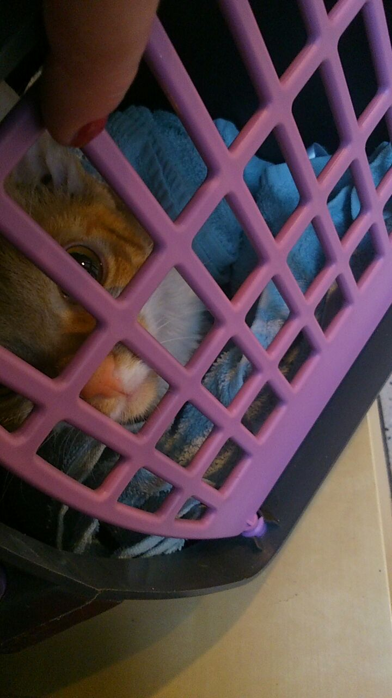

Wer mag schon zum Tierarzt??
Ich jedefalls nicht! Leider sind Fundtiere wie ich oft schwach und werden deshalb leicht krank (oder sind es schon). Wir haben genauso wenig Lust zum Arzt zu gehen wie jede(r) andere, aber das muss manchmal sein. Am besten, du gehst dort gleich mal hin nachdem du uns zu dir geholt hast! Wir beide wissen dann von Anfang an wo's hapert (und ob uberhaupt). Ab dann kann der Spaß losgehen, du hast einen neuen Katzenkumpel der dich zum Lachen bringt und "ent-Spennt", und wieder hat ein "Felli" ein schönes Zuhause!
